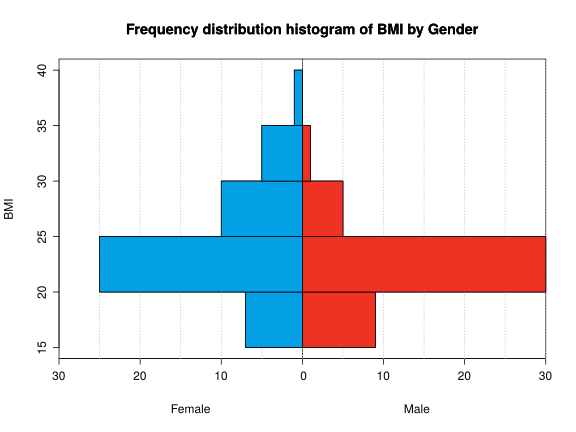

Problems of Descriptive Statistics Exercise 1 The number of injuries suffered by the members of a soccer team in a league were 0 1 2 1 3 0 1 0 1 2 0 1 1 1 2 0 1 3 2 1 2 1 0 1 Calculate the following statistics and interpret them. Mean. Median. Mode. Quartiles. Percentile 32. Solution $\bar x=1.125$ injuries. $Me=1$ injury. $Mo=1$ injury. $Q_1=1$ injury, $Q_2=1$ injury and $Q_3=2$ injuries. $P_{32}=1$ injury. Exercise 2 The chart below shows the cumulative distribution of the time (in min) required by 66 students to do an exam. At what time have half of the students finished? And 90% of students? What percentage of students have finished after 100 minutes? What is the time that best represent the time required by students in the sample to finish the exam? Is this value representative or not? Solution $Me=94.62$ min. $P_{90}=132$ min. $57.08%$ of students. $\bar x=85.9091$ min, $s=37.5268$ min and $cv=0.4368$. Exercise 3 In a study about children’s growth, two samples were drawn, one for newborn babies and the other for one year old infants. The heights in cm of children in each of the samples were Newborn children: 51 50 51 53 49 50 53 50 47 50 One year old children: 62 65 69 71 65 66 68 69 In which group is the mean more representative? Justify your answer. Solution Newborn children: $\bar x=50.4$ min, $s_x=1.6852$ min and $cv_x=0.0334$. One year old children: $\bar y=66.875$ min, $s_y=2.7128$ min and $cv_y=0.0406$. Exercise 4 To determine the accuracy of a method for measuring hematocrit in blood, the measurement was repeated 8 times on the same blood sample. The results of hematocrit in plasma, in percentage, were 42.2 42.1 41.9 41.8 42 42.1 41.9 42 What do you think about the accuracy of the method? Solution $\bar x=42$ min, $s=0.1225$ min and $cv=0.0029$. Exercise 5 The histogram below shows the frequency distribution of the body mass index (BMI) of a group of people by gender.  Draw the pie chart for the gender. In which group is more representative the mean of the BMI? Calculate the mean for the whole sample. Use the following sums Females: $\sum x_i=1160$ kg/m$^2$ $\sum x_i^2=29050$ kg$^2$/m$^4$ Males: $\sum x_i=1002.5$ kg/m$^2$ $\sum x_i^2=22781.25$ kg$^2$/m$^4$ Solution Females: $\bar x=24.1667$ min, $s_x=4.6022$ min and $cv_x=0.1904$. Males: $\bar y=22.2778$ min, $s_y=3.1545$ min and $cv_y=0.1416$. $\bar z=23.2527$. Exercise 6 The following table represents the frequency distribution of ages at which a group of people suffered a heart attack. age persons [40,50) 6 [50,60) 12 [60,70) 23 [70,80) 19 [80,90) 5 Could we assume that the sample comes from a normal population? Use the following sums: $\sum x_i=4275$ years, $\sum(x_i-\bar x)^2=7461.5385$ years$^2$, $\sum (x_i-\bar x)^3=-18248.5207$ years$^3$, $\sum (x_i-\bar x)^4=2099635.8671$ years$^4$. Solution $g_1=-0.2283$ and $g_2=-0.5487$. Exercise 7 To compare two rehabilitation treatments $A$ and $B$ for an injury, every treatment was applied to a different group of people. The number of days required to cure the injury in each group is shown in the following table: Days A B 20-40 5 8 40-60 20 15 60-80 18 20 80-100 7 7 In which treatment is more representative the mean? In which treatment the distribution of days is more skew? In which treatment the distribution is more peaked? Use the following sums: $A$: $\sum x_i=3040$ days, $\sum (x_i-\bar x)^2=14568$ days$^2$, $\sum (x_i-\bar x)^3=17011.2$ days$^3$, $\sum (x_i-\bar x)^4=9989602.56$ days$^4$ $B$: $\sum y_j=3020$ days, $\sum (y_j-\bar y)^2=16992$ days$^2$, $\sum (y_j-\bar y)^3=-42393.6$ days$^3$, $\sum (y_j-\bar y)^4=12551516.16$ days$^4$ Solution $A$: $\bar a=60.8$ days, $s_a=17.0693$ days and $cv_a=0.2807$. $B$: $\bar b=60.4$ days, $s_b=18.4347$ days and $cv_b=0.3052$. $g_{1a}=0.0684$ and $g_{1b}=-0.1353$. $g_{2a}=-0.6465$ and $g_{2b}=-0.8264$, so the distribution of treatment $A$ is more peaked than the one of treatment $B$ as $g_{2a} > g_{2b}$. Exercise 8 The systolic blood pressure (in mmHg) of a sample of persons is 135 128 137 110 154 142 121 127 114 103 Calculate the central tendency statistics. How is the relative dispersion with respect to the mean? How is the skewness of the sample distribution? How is the kurtosis of the sample distribution? If we know that the method used for measuring the blood pressure is biased, and, in order to get the right values, we have to apply the linear transformation $y=1.2x-5$, what are the statistics values of parts (a) to (d) for the new, corrected distribution? Use the following sums: $\sum x_i=1271$ mmHg, $\sum (x_i-\bar x)^2=2188.9$ mmHg$^2$, $\sum (x_i-\bar x)^3=2764.32$ mmHg$^3$, $\sum (x_i-\bar x)^4=1040079.937$ mmHg$^4$. Solution $\bar x=127.1$ mmHg, $Me=127.5$ mmHg, $Mo$ all the values. $s=14.7949$ mmHg and $cv=0.1164$. $g_1=0.0854$. $g_2=-0.8292$. $\bar x=147.52$ mmHg, $Me=148$ mmHg, $Mo=157$ mmHg, $s=17.7539$ mmHg, $cv=0.1203$, $g_1=0.0854$ and $g_2=-0.8292$. Exercise 9 The table below contains the frequency of pregnancies, abortions and births of a sample of 999 women in a city. Num Pregnancies Abortions Births 0 61 751 67 1 64 183 80 2 328 51 400 3 301 10 300 4 122 2 90 5 81 2 62 6 29 0 0 7 11 0 0 8 2 0 0 How many birth outliers are in the sample? Which variable has lower spread with respect to the mean? Which value is relatively higher, 7 pregnancies or 4 abortions? Justify your answer. Use the following sums: Pregnancies: $\sum x_i=2783$, $\sum x_i^2=9773$. Abortions: $\sum y_j=333$, $\sum y_j^2=559$. Births: $\sum z_k=2450$, $\sum z_k^2=7370$. Solution $129$ outliers. Pregnancies: $\bar x=2.7858$, $s_x=1.422$ and $cv_x=0.5105$. Abortions: $\bar y=0.3333$, $s_y=0.6697$ and $cv_y=2.009$. Births: $\bar z=2.4525$, $s_z=1.1674$ and $cv_z=0.476$. Standard score of $7$ pregnancies is $2.9635$, and standard score of $4$ abortions is $5.4754$. Descriptive-Statistics Previous Problems of Frequency Tables and Charts Next Problems of Linear Regression